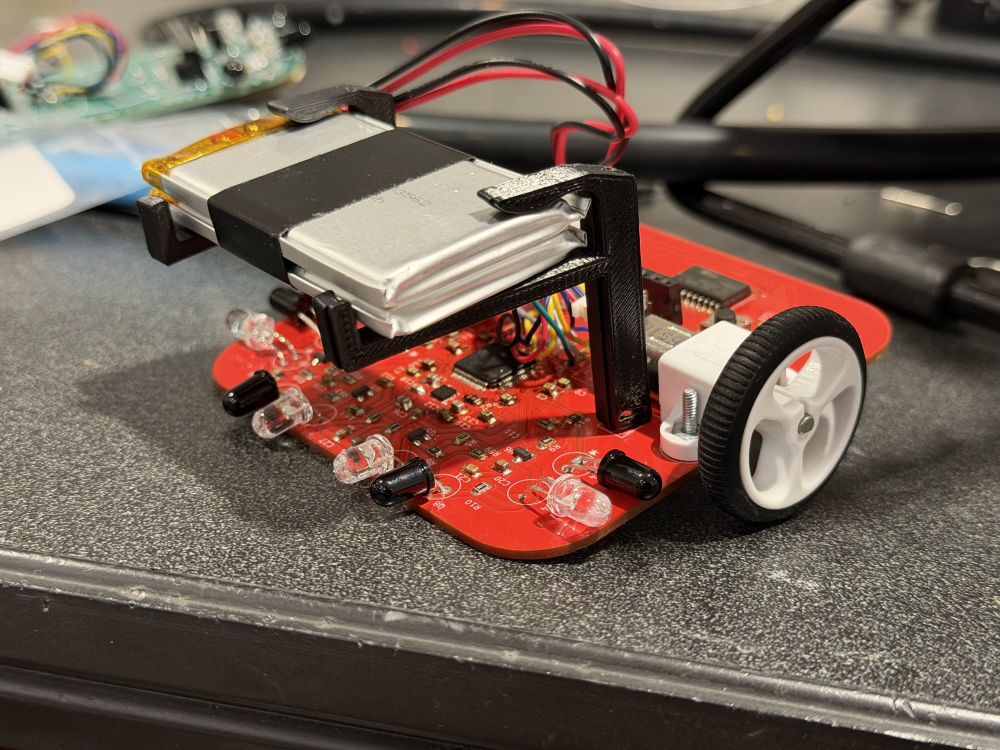
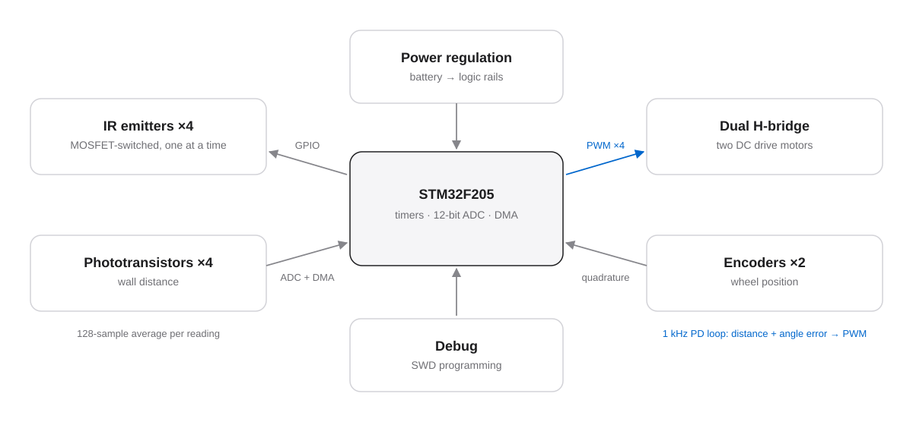
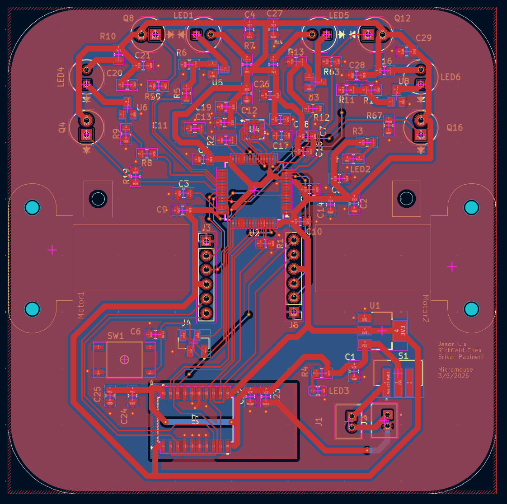
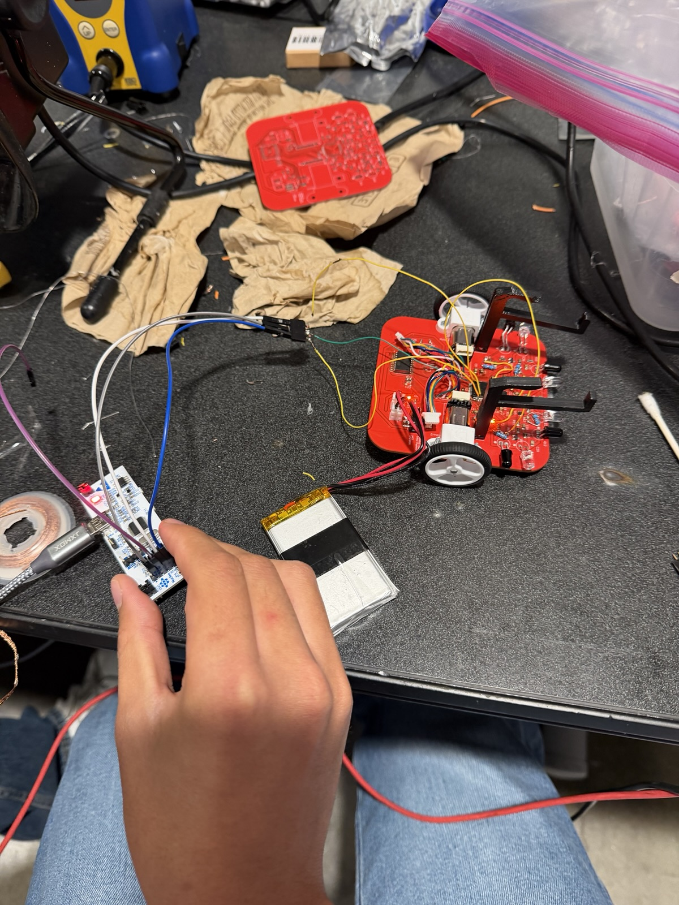

Completed · Sep 2025 – May 2026
Micromouse robot
A small autonomous robot for the IEEE Micromouse competition, built on a custom STM32 board with IR wall sensors, wheel encoders, and closed-loop motor control.
We finished and assembled the robot, and the board, motors, encoders, and IR sensors all worked. We didn’t get to a full maze run before the season ended, so this page focuses on the hardware and control work.

Background
A Micromouse needs to see the walls around it, keep track of how far it has moved, and drive straight and turn accurately, all on a palm-sized board running from a small battery.
That means the MCU, motor drivers, encoders, IR sensors, power regulation, and debug header all share one compact layout, with noisy motors right next to sensitive analog sensing.
How it works



What I did
We built the robot as a team of three. My part:
- Designed and assembled the two-layer STM32F205 board in KiCad, with dual H-bridge motor drivers, encoder inputs, IR sensing in four directions, power regulation, and a debug header.
- Set up the STM32 timers to read the quadrature encoders and drive four motor PWM channels.
- Wrote a 1 kHz PD controller for driving straight and making 90° turns.
- Wrote the IR sensing code: MOSFET-switched emitters fired one at a time, 12-bit ADC readings, and DMA averaging over 128 samples per reading.
Design decisions
One IR emitter at a time
Each emitter has its own MOSFET, and they turn on one after another. I wait for the phototransistor to settle before sampling, so each reading comes from one direction without crosstalk from the others.
Averaging with DMA
DMA collects 128 ADC samples per reading without using the CPU. That smooths out the wall readings without slowing down the control loop.
A 1 kHz control loop
The encoders give the distance and heading error, and a PD controller turns those into left and right motor commands every millisecond, with limits so the motors don’t saturate.
Tuning on a practice kit
We tuned the controller on a practice kit before our custom board was ready, so tuning didn’t have to wait for board bring-up.
Results
On the final robot, the board, motor drivers, encoders, and IR sensing all came up and worked. We didn’t record tracking or turn-accuracy data.
The video is from the practice kit while we were tuning the controller.
A debugging story
One problem on the final board was in the analog circuit, not the code: a resistor divider in the IR sensing path had the wrong value.
It taught me to double-check analog component values before finalizing a layout, not just the firmware.
Where it ended
Worked
- Custom board assembled and brought up
- Motor PWM, encoder readings, and IR sensing
Didn’t get to
- A full competition maze run
- Measuring tracking and turn accuracy